| ・ Web会議本番 (R02.03.30) | |||
先週、准教授の人と隣の部屋のN谷さんとやってみたweb会議の本番です。光、流体、音チームと2名ずつ6名と遠隔地（M4さん除く）で、 I田さんはちょっとトラブっていますが接続して、支障なく打ち合わせ出来ました。ただ准教授の人が聞こえてないかも？とおっきい声で話すので疲れたとのこと。 |
|||
|
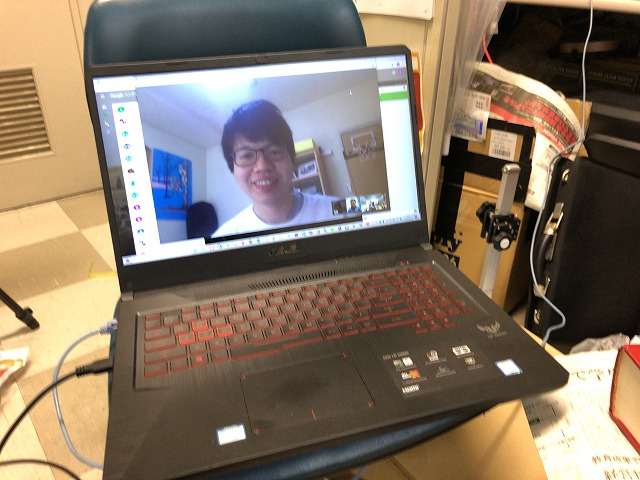
B4O村さんとM1S山さんとスムーズに |
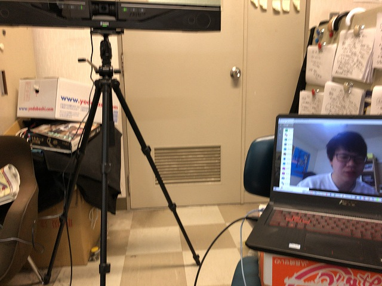
問題なく打ち合わせできました | ||
|
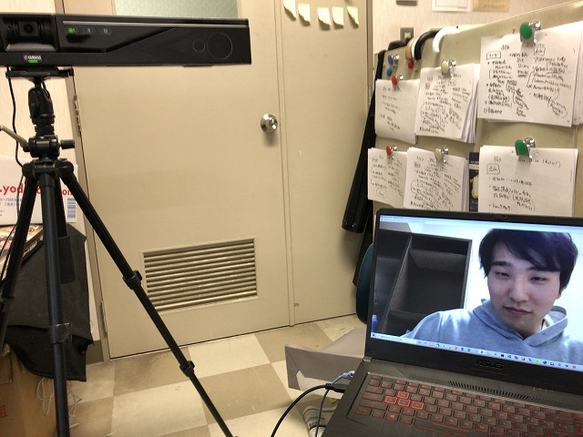
次はB4S永さんとM1I田さん |
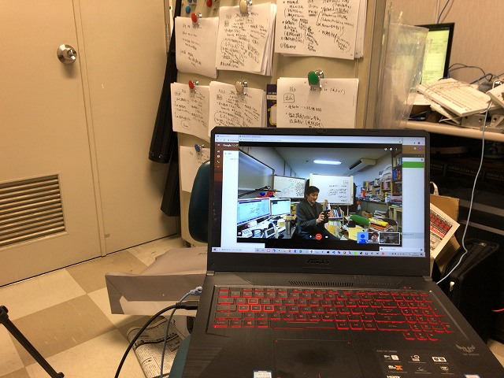
20分くらいI田さん繋がらないよねぇと打ち合わせ | ||
|
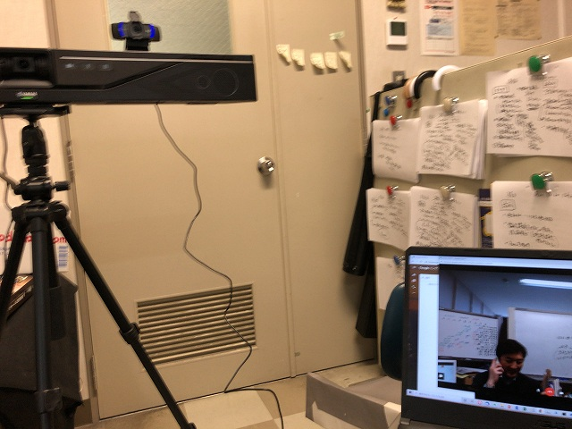
4kカメラにするとホワイトボード読めるとのこと |
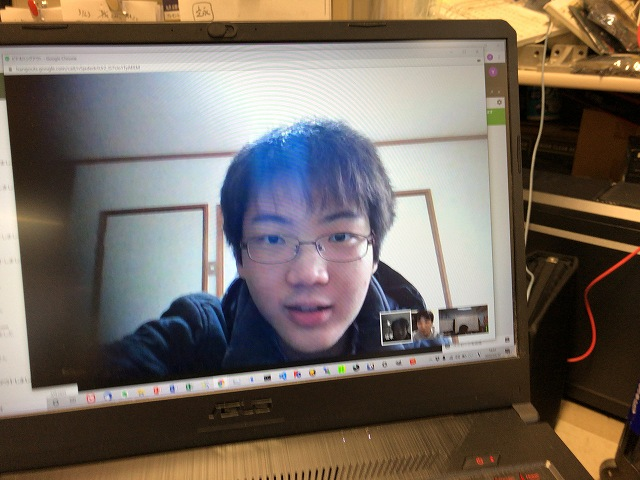
I田さんの声だけ聞こえない | ||
|
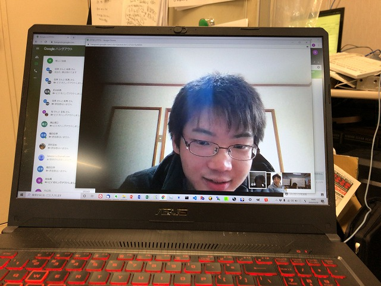
准教授の人と電話連絡中 |
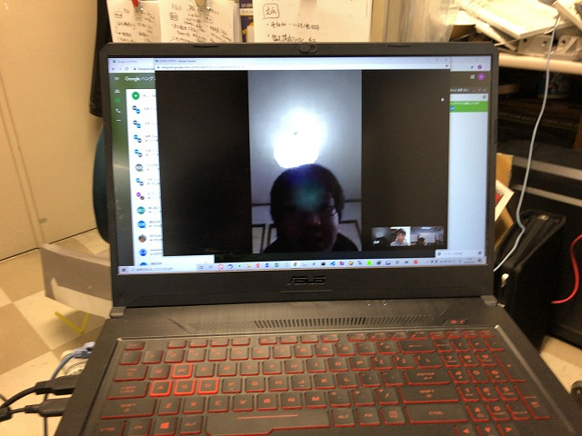
最終手段でI田さんは携帯で接続 | ||
|
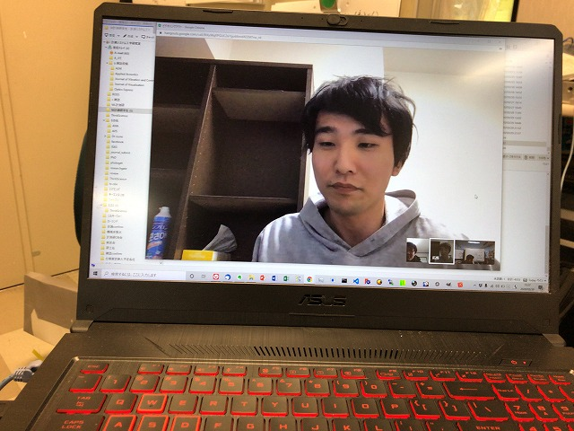
最初からS永さんと准教授の人の会話は聞こえてたそうです |
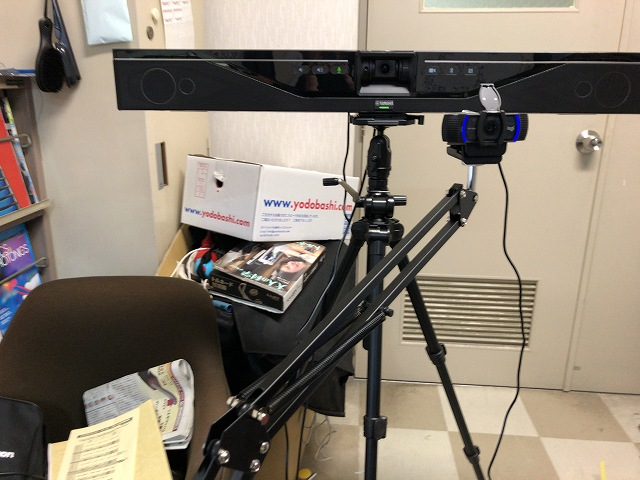
アームに着けてみた | ||
|
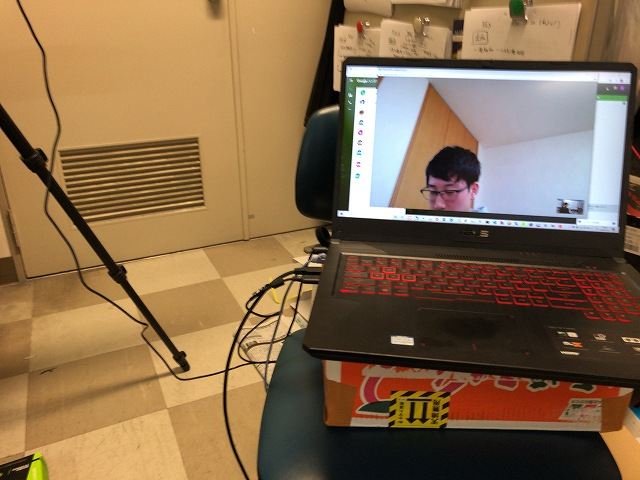
最後のB4M村さんと |
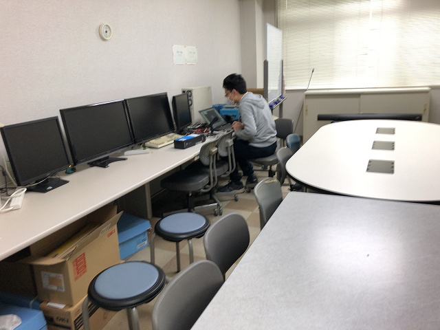
就活で来てたM1M4さんはFの部屋から | ||
|
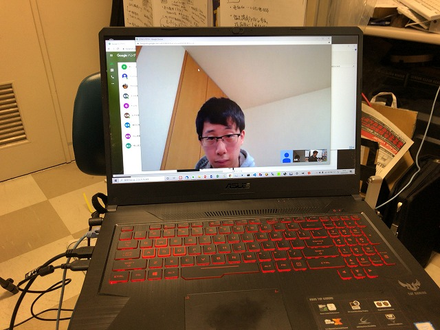
最初はM4さんトラブったけど接続 |
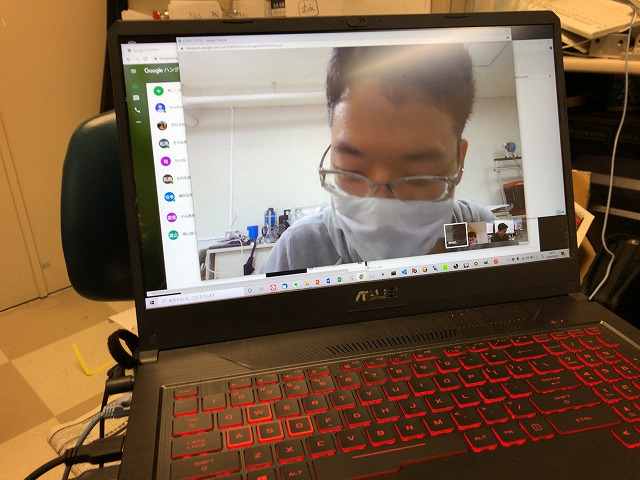
准教授の人がおっきい声出すので聞こえてたそうです | ||